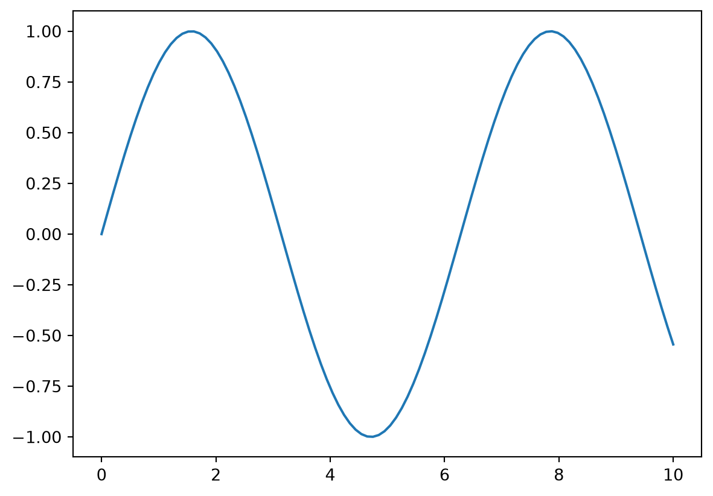
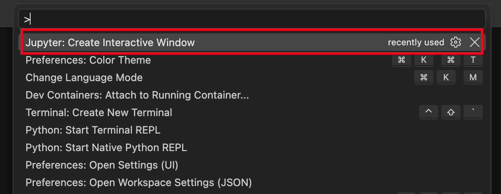
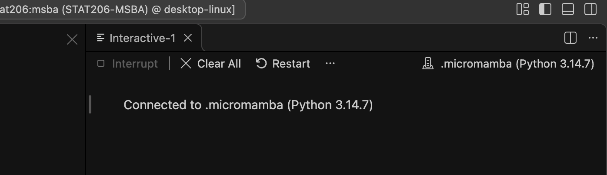
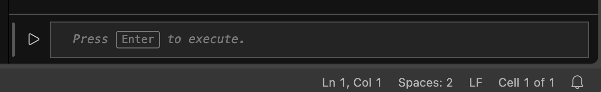
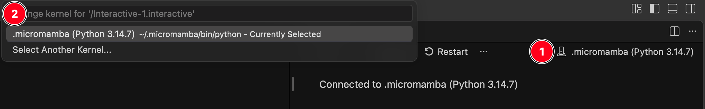
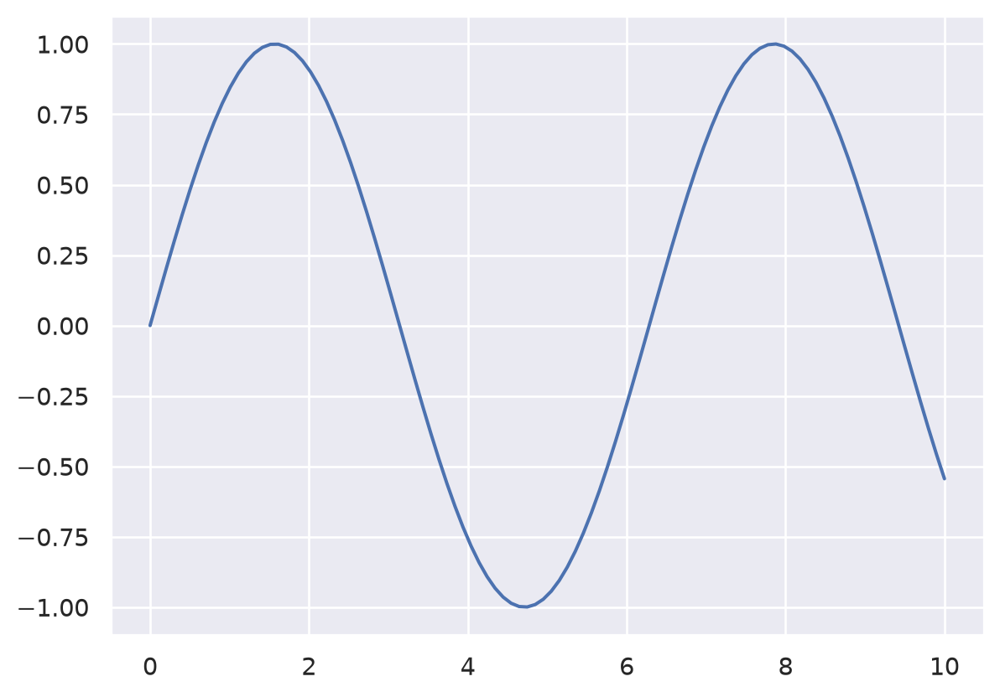
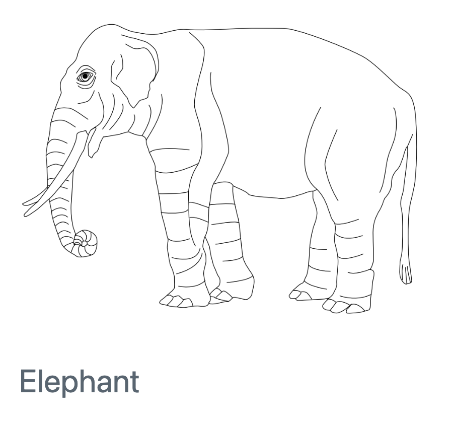

Setup: Installing Required Software
Goals
- Verify that your container environment has
matplotlibandseaborninstalled. - Learn a basic workflow to quickly prototype graphics.
- Learn how to use Quarto to integrate figures into a report.
Interactive Plotting with Jupyter
Our container environment cannot display graphics through an interactive viewer pane. Instead, we can use an interactive Jupyter environment to quickly prototype plots.
1. Start a Jupyter window
- Open the Command Palette (Windows: Ctrl + Shift + P, MacOS: Cmd + Shift + P)
- Type in
Jupyter: Create Interactive Window. You can type this in partially to take advantage of the fuzzy search feature. - Select the option.

If this option is not available, you may be missing the Jupyter VSCode extension.
2. Check the kernel.
A new window should open within VSCode. For example:

Check that .micromamba (Python 3.14.7) is shown in the top-right corner. The bottom of this window has a section where you can type in Python code.

3. Fixing the kernel choice (as needed)
If you did not see .micromamba (Python 3.14.7):

- Click on small tower icon. This should open a new dialogue.
- Look for the
.micromamba (Python 3.14.7)option.- Select
Select Another Kernel... - Select
Python Environments... - Select
.micromamba (Python 3.14.7) ~/.micromamba/bin/python
- Select
Installing Packages
Verify Installations
You will need to open a Jupyter session and a regular Terminal window. Follow the instructions given here to install any required software, as documented here.
To help you (and us) troubleshoot any errors, check that
returns
First, let’s check that you can load matplotlib. Run the following code in a Jupyter session within VSCode:
If this fails, jump to Install: matplotlib.
Now let’s check that you can load seaborn. It is built on top of matplotlib so you will generally have to load both packages if you use seaborn. Enter the following in a Jupyter session:

This is expected to fail. Jump to Install seaborn to fix it.
Install: matplotlib
In a Terminal window, type and run the command
Follow and accept any prompts given.
Install: seaborn
In a Terminal window, type and run the command
Follow and accept any prompts given.
Working with Quarto
As shown in the previous sections, running plt.show() will cause a Quarto code chunk to display a figure at the bottom of the code chunk. In general, you may need to exercise control over the display of figures in a report. See the Quarto documentation for a full list of features. The following is a brief review of options you are most likely to need.
Including a saved file
Some of the images in this document are screenshots. You can include an image using the following Markdown syntax:
Here’s the elephant example from the Quarto documentation:

Resizing
Add additional parameters using curly braces {}. For example, you can resize a figure with the width attribute:
Alignment
You can also change figure alignment to "left", "center", or "right". Notice that you can edit multiple attributes by separating them with spaces.